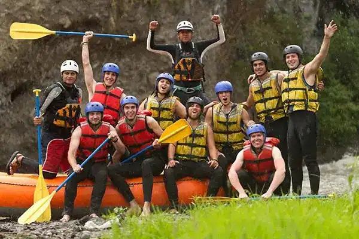

Do you love rafting?
Welcome to The Rapids White Water Rafting, where adventure meets purpose on every wave. Our mission is to deliver unforgettable, safe, and adrenaline-filled rafting experiences that connect people with nature and awaken a spirit of exploration. We believe that every rafting holds a story, every rider carries courage, and every journey strengthens the bond between humanity and the wild. Guided by our creed of passion, protection, and perseverance, we strive to be the ultimate destination for thrill-seekers and nature lovers alike. Ride the Rush. Feel the Freedom.